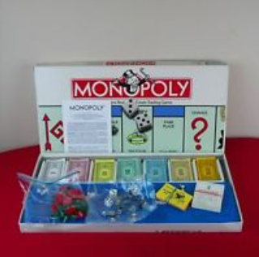
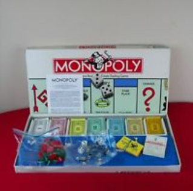
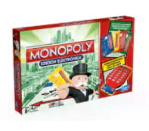

Antes
Un juego creado con la función de servir como herramienta para enseñar las teorías acerca de la justicia social y económica extraídas del estudio titulado "Progreso y Miseria de Henry George"
El juego de mesa más vendido de la historia
Un juego creado con la función de servir como herramienta para enseñar las teorías acerca de la justicia social y económica extraídas del estudio titulado "Progreso y Miseria de Henry George"
Comercializado por vez primera en el año de 1936.
A lo largo de 80 años, el juego ha sufrido una notable evolución. Sus múltiples ediciones y sus tantas versiones han dado pie a que se cambiara desde la caja que lo contiene hasta los elementos que lo componen. Logrando así, mantenerse como el favorito a través de las décadas.
Con los años la finalidad del juego cambió para sólo disfrutar un buen rato, negociado propiedades y hasta haciendo uso de medios electrónicos para todas las transacciones que requiere el juego.
